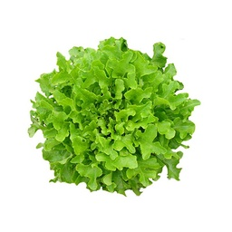

Informações
- Alcace
- Cebola
- Tomate
-

ALFACE
- Alface é uma hortense anual ou bienal, utilizada na alimentação humana desde cerca de 500 a.C.. Originária do Leste do Mediterrâneo, é mundialmente cultivada para o consumo em saladas, com inúmeras variedades de folhas, cores, formas, tamanhos e texturas.
-
CEBOLA
- Cebola é o nome popular da planta cujo nome científico é Allium cepa. Em sistemas taxonómicos mais antigos, pertencia à família das Liliáceas e subfamília das alioídeas - taxonomistas mais recentes incluem-na na família das Amaryllidaceae.
-
TOMATE
- O tomate é o fruto do tomateiro. Da sua família, fazem também parte as berinjelas, as pimentas e os pimentões, além de algumas espécies não comestíveis. A palavra portuguesa tomate vem do castelhano tomate, derivada do náuatle tomatl. Esta apareceu pela primeira vez na imprensa em 1595.